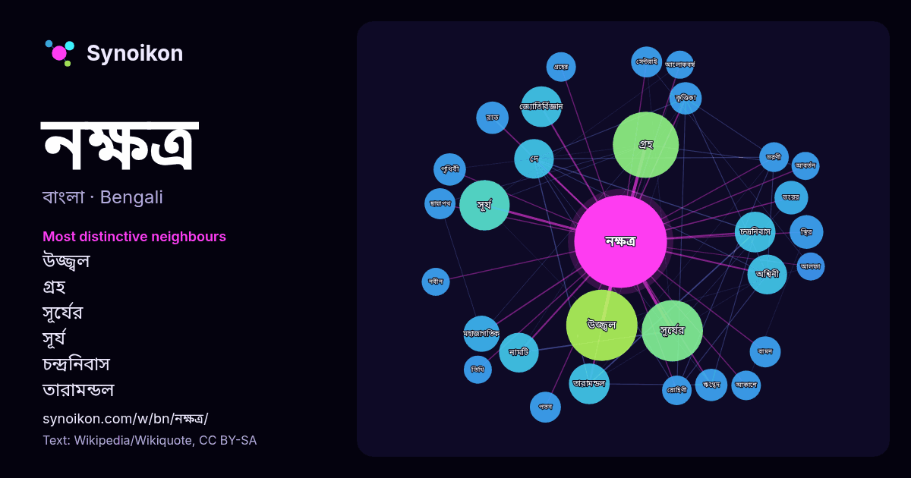

বাংলা · আজকের শব্দের তালিকা
নক্ষত্র
“star” · উইকিপিডিয়া, Wikiquote থেকে 959টি প্রয়োগে এর চারপাশে পাওয়া শব্দ।

সবচেয়ে স্বতন্ত্র প্রতিবেশী
- উজ্জ্বল 42×
- গ্রহ 41×
- সূর্যের 32×
- সূর্য 22×
- চন্দ্রনিবাস 19×
- তারামন্ডল 19×
- জ্যোতির্বিজ্ঞান 18×
- অশ্বিনী 18×
- মহাজাগতিক 14×
- কৃত্তিকা 13×
- ঋগ্বেদ 13×
- দে 12×
- ভরের 12×
- নামটি 12×
- সেন্টরাই 12×
- বামন 11×
- ছায়াপথ 11×
- ভরণী 11×
- রোহিণী 11×
- রাত 10×
× = সাধারণ উইকিপিডিয়া টেক্সটের চেয়ে কত গুণ বেশি।
সবচেয়ে ঘন ঘন প্রতিবেশী
- উজ্জ্বল 58
- গ্রহ 50
- সূর্যের 43
- সূর্য 29
- নাম 28
- অবস্থান 26
- সময় 24
- অনুসারে 20
- চন্দ্রনিবাস 19
- জ্যোতির্বিজ্ঞান 19
- তারামন্ডল 19
- অশ্বিনী 18
- দে 18
- নামটি 18
- সবচেয়ে 18
- অবস্থিত 17
- ভারতীয় 17
- মহাজাগতিক 15
- এসেছে 14
- গঠন 14
প্রসঙ্গে
- গণিতজ্যোতিষে গাণিতিকভাবে ১২.৮৫৩ (বা ১২° ৫১ ৩/৭') অংশে (degree) এক নক্ষত্র ও ২.৩ নক্ষত্রে এক রাশি হিসেব করা হয় । সময়ের হিসেব রাখার প্রয়োজনে নিশাসঙ্গী চাঁদের Wikipedia snippets · নক্ষত্র (হিন্দু জ্যোতিষ)
- করেন। নক্ষত্র সময় ব্যবহার করে রাতের আকাশে সঠিক স্থানাঙ্কে একটি টেলিস্কোপকে সহজেই নির্দেশ করা সম্ভব। নক্ষত্র সময় হল একটি "সময় মাপনী যা স্থির নক্ষত্রের সাপেক্ষে Wikipedia snippets · নক্ষত্র সময়
- ফিউশন বিক্রিয়া ঘটাতে পারে এবং আলোক উজ্জ্বল হয় তাদেরকে নক্ষত্র বলা হয়। এছাড়া তারা, তারকা বা নক্ষত্র বলতে মহাশূন্যে প্লাজমা দশায় অবস্থিত অতি উজ্জ্বল এবং Wikipedia snippets · তারা
- পরিচিত। এগুলি মহাবিশ্বের সর্বাধিক সংখ্যক প্রাকৃতিক নক্ষত্র এবং আমাদের সূর্যও এদের অন্তর্ভুক্ত। নক্ষত্রের ঘনীভবন এবং জ্বলনের পরে, এটি হাইড্রোজেনের কেন্দ্রীণ Wikipedia snippets · প্রধান-ধারা (নক্ষত্রের শ্রেণি)
- মাদ্রীসুত নকুল ও সহদেবের জনক। নক্ষত্র (চন্দ্রনিবাস) নক্ষত্র (তারামন্ডল) ঋগ্বেদ ১.৩.১-৩ ঋগ্বেদ ১.২২.২ ঋগ্বেদ ১.৩৪.১১ দে স ২৮ নক্ষত্র অশ্বিনী • ভরণী • কৃত্তিকা • Wikipedia snippets · অশ্বিনী
- জ্যোতিষশাস্ত্রের সপ্তদশ নক্ষত্র (চন্দ্র ম্যানশন) যা ৩°২০' থেকে ১৬°৪০ পর্যন্ত বিস্তৃত। অনুরাধা শনি (শনি) দ্বারা শাসিত হয়। মিত্রা অনুরাধা নক্ষত্রের দেবতা। অনুরাধা Wikipedia snippets · অনুরাধা (নক্ষত্র)
- উলফ-র্যায়েট যুগ্ম ও একটি উত্তপ্ত অতিদানব সম্বলিত ত্রি-নক্ষত্র জগৎ। মিশরীয় পুরাণের সর্পদেবতার নামাঙ্কিত এই নক্ষত্র জগতটিকে ঘিরে রয়েছে যুগ্মটির প্রাথমিক তারার উচ্চ Wikipedia snippets · আপেপ (নক্ষত্র জগৎ)
- নক্ষত্র নিম্নের যেকোন শব্দকে নির্দেশ করতে পারে: নক্ষত্র (চন্দ্রনিবাস) - আকাশজুড়ে বিন্যস্ত অসংখ্য জ্যোতিষ্কের পটভূমিতে পৃথিবীকে কেন্দ্র করে ঘূর্ণায়মান Wikipedia snippets · নক্ষত্র (দ্ব্যর্থতা নিরসন)
আরও শব্দ
- অরণ্য
- আয়না
- ইতিহাস
- ঈশ্বর
- কাজ
- কুকুর
- ক্ষমতা
- খাদ্য
- গান
- গ্রীষ্ম
- ঘড়ি
- ঘণ্টা
- ঘোড়া
- ছায়া
- জননী
- জলবায়ু
- জীবন
- ঝড়
- টাকা
- ট্রেন
- দারুচিনি
- দ্বীপ
- নীরবতা
- পরিবার
- পানি
- পাহাড়
- প্রকৃতি
- বাগান
- বিজ্ঞান
- বিড়াল
- বৃষ্টি
- ভাষা
- মধু
- মরুভূমি
- মানচিত্র
- মৃত্যু
- রাস্তা
- রুটি
- লবণ
- শরৎ
- শহর
- শিল্প
- শীত
- সত্য
- সময়
- সেতু
- সোনা
- স্বাস্থ্য
- হৃদয়
2026-10-09 তারিখে ডিফল্ট সেটিংসে (±5 শব্দ, মাঝারি কর্পাস) আগে থেকে গণনা করা। ইন্টারঅ্যাক্টিভ মানচিত্র লাইভ ডেটা দিয়ে এটি হালনাগাদ করতে পারে।
যন্ত্রে অনূদিত ইন্টারফেস; সংশোধন স্বাগত।